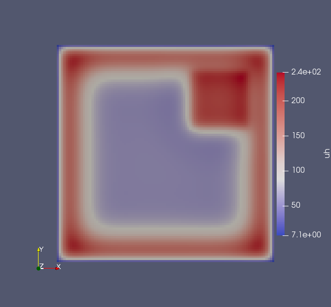
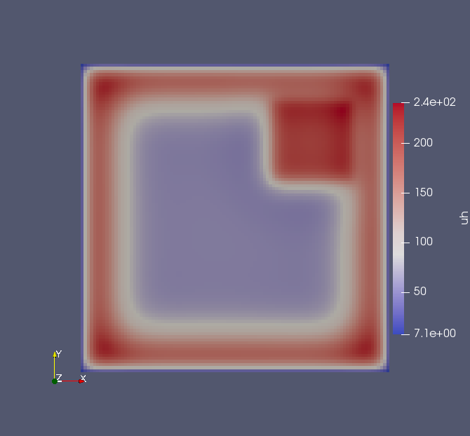

PDE-contrained optimization
Poisson-Boltzman problem
We consider here a 2D Poisson-Boltzmann problem
\[\left\lbrace \begin{aligned} \min\limits_{y \in H_0^1(\Omega), u \in L^2(\Omega) } \ & \frac{1}{2}\int_{\Omega} |y - y_d(x)|^2 + \frac{1}{2}\alpha \int_\Omega |u|^2dx, \\ \text{ s.t. } & -\Delta y + \sinh{y} = h + u, \quad \text{in } \Omega:=(-1,1)^2,\\ & y = 0, \quad \text{in } \partial\Omega, \end{aligned} \right.\]
with the forcing term $h(x_1,x_2)=-\sin(\omega x_1) \sin(\omega x_2)$, $\omega = \pi - \frac{1}{8}$, and target state
\[\begin{aligned} y_d(x) = \begin{cases} 10 \quad \text{if } x \in [0.25,0.75]^2, \\ 5 \quad \text{otherwise}. \end{cases} \end{aligned}\]
The implementation as a GridapPDENLPModel is given as follows.
using Gridap, PDENLPModels
#Domain
n = 100
model = CartesianDiscreteModel((-1,1,-1,1), (n,n))
#Definition of the spaces:
order = 1
valuetype = Float64
reffe = ReferenceFE(lagrangian, valuetype, order)
Xpde = TestFESpace(
model,
reffe;
conformity = :H1,
dirichlet_tags="boundary",
)
Ypde = TrialFESpace(Xpde, 0.0)
Xcon = TestFESpace(model, reffe; conformity = :L2)
Ycon = TrialFESpace(Xcon)
#Integration machinery
trian = Triangulation(model)
degree = 1
dΩ = Measure(trian,degree)
#Objective function:
yd(x) = min(x[1]-0.25, 0.75-x[1],x[2]-0.25, 0.75-x[2])>=0. ? 10. : 5.
function f(yu)
y, u = yu
∫( 0.5 * (yd - y) * (yd - y) + 0.5 * 1e-4 * u * u )dΩ
end
#Definition of the constraint operator
ω = π - 1/8
h(x) = - sin(ω*x[1])*sin(ω*x[2])
function res(y, u, v)
∫( ∇(v) ⊙ ∇(y) + operate(sinh, y)*v - u*v - v * h )dΩ
end
op = FEOperator(res, Y, Xpde)
Y = MultiFieldFESpace([Ypde, Ycon])
xin = zeros(Gridap.FESpaces.num_free_dofs(Y))
nlp = GridapPDENLPModel(xin, f, trian, dΩ, Ypde, Ycon, Xpde, Xcon, op)Then, one can solve the problem with Ipopt via NLPModelsIpopt.jl and plot the solution as a VTK file.
stats = ipopt(nlp, print_level = 0)Switching again the discrete solution as a FEFunction the result can written as a VTK-file using Gridap's facilities.
yfv = stats.solution[1:Gridap.FESpaces.num_free_dofs(nlp.Ypde)]
yh = FEFunction(nlp.Ypde, yfv)
ufv = stats.solution[1+Gridap.FESpaces.num_free_dofs(nlp.Ypde):end]
uh = FEFunction(nlp.Ycon, ufv)
writevtk(nlp.tnrj.trian,"results",cellfields=["uh"=>uh, "yh"=>yh])Finally, the solution is obtained using any software reading VTK, e.g. Paraview.
 
